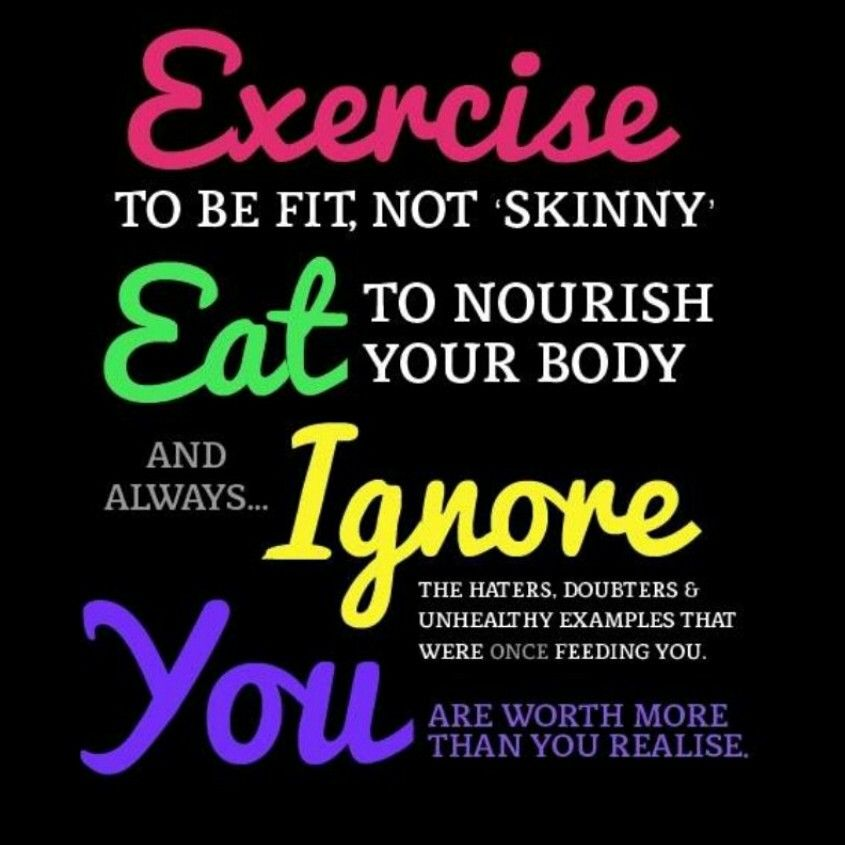
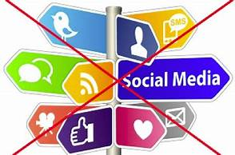
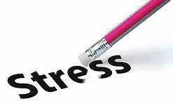
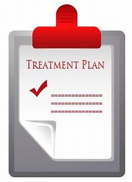
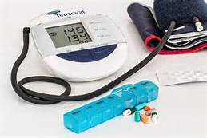
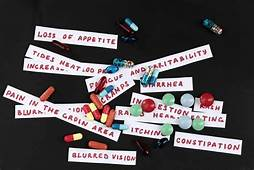
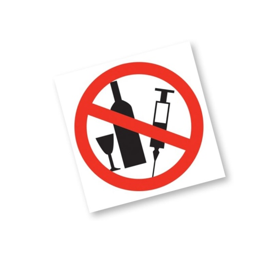
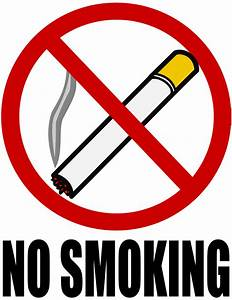
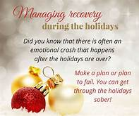

So here is the main thing which i want to share with you through this website. So that you can find ways to deal with depression.
There’s no sure way to prevent depression. But here are many lifestyle changes and stress management techniques you can use to prevent or avoid depression. There are certain triggers that can cause us to experience depressive episodes. While triggers may be different for everyone, these are some of the best techniques you can use to prevent or avoid depression relapse.
Exercise regularly

Exercising regularly is one of the best things you can do for your mental health. According to the Mayo Clinic, exercise can help in the treatment and prevention of depression in several key ways:
It increases your body temperature, which can have a calming effect on the central nervous system.
It releases chemicals like endorphins, which can boost mood.
It reduces immune system chemicals that may worsen depression.
All types of physical exercise can help treat depression, but it’s best to exercise regularly. To get more exercise, you can:
Join a sports team or studio (like yoga or kickboxing), where you’ll be part of a community in addition to being active.
Take the stairs instead of the elevator.
Cut back on social media time
Research has shownTrusted Source that increased social media usage can cause or contribute to depression and low self-esteem. Social media can be addicting, and it’s a necessity to stay connected with family, friends, and even coworkers. It’s how we plan and invite each other to events and share big news.
However, limiting social media time can help prevent depression. You can do this by:
deleting all social apps from your phone
using website-blocking extensions that only let you use certain sites for a preset amount of time
only going to social media with a purpose and avoiding logging on several times a day just for something to do
Build strong relationships
Having a strong support system and an active social life is important for our mental health. Research has shownTrusted Source that having even “adequate” social support can protect against depression.
Make sure that you’re regularly connecting with friends and family, even when your lives are busy. Attending social events when you can and finding new hobbies that could help you meet new people can all help you build new relationships too.
Minimize your daily choices
Have you ever walked into a theme park and been overwhelmed at what you want to do first? Researchers think that having too many choices can actually cause significant stress that can lead to depression.
Psychologist Barry Schwartz, author of the book “The Paradox of Choice,” describes research that shows that when faced with too many choices, those who aim to make the best possible choice — “maximizers” — face higher rates of depression.
For many of us, our lives are filled with choices. Which outfit do we wear, and should we buy yogurt or eggs or bagels or English muffins or sausage for breakfast? The pressure of making the right — or wrong — choice is thought to contribute to depression.
If making choices stresses you out, simplify things. You can:
Learn to be decisive more quickly.
Reduce the decisions you’ll have to make during the work week: Plan out your outfits, and have your meals prepped and ready to go.
Reduce stress
Chronic stress is one of the most avoidable common causes of depression. Learning how to manage and cope with stress is essential for optimal mental health.
To manage stress, you can:
Avoid overcommitting to things.
Practice mindfulness or meditation.
Learn to let things go that you can’t control.
Maintain your treatment plan

If you’ve already experienced one depressive episode, there’s a decent chance you’ll experience anotherTrusted Source. That’s why maintaining your treatment plan is so important.
This includes:
continuing prescription medications, and never stopping them abruptly
having “maintenance” visits with your therapist every so often when in remission
consistently practicing the strategies and coping mechanisms your therapist taught you
Get plenty of sleep
Getting plenty of high-quality sleep is necessary for both mental and physical health. According to the National Sleep Foundation, people with insomnia have a tenfold risk of developing depression compared to those who sleep well.
To get better sleep, you can:
not look at any screens for two hours before bed (including your phone!)
meditate before bed
have a comfortable mattress
avoid caffeine after noon
Stay away from toxic people
We’ve all met that person who just makes us feel bad about ourselves. Sometimes they’re an outright bully, and other times they subtly put us down to make themselves feel better. They may even be someone who takes advantage of us. Regardless of the specific situation, toxic people should be avoided at all costs. They can lower our self-esteem.
One study from 2012 found that negative social interactions were linked to higher levels of two proteins known as cytokines. These two proteins are associated with inflammation as well as depression.
To avoid toxic people, you should:
Stay away from anyone who makes you feel worse about yourself.
Cut people out of your life who take advantage of you.
Know the signs. If someone spreads rumors or talks badly about someone as soon as they leave the room, they’re likely to do the same for you.
Eat well
Recent research has shown that regularly consuming a high-fat diet can have similar effects as chronic stress in terms of causing depression. In addition, an unhealthy diet can also deprive your body of vital nutrients it needs to maintain physical and mental health.
To prevent depression with your diet, you should:
Eat balanced meals with lean protein, and lots of fruits and vegetables.
Reduce high-sugar and high-fat foods.
Eliminate processed foods from your diet as much as possible.
Incorporate more omega-3s into your diet, with foods like salmon or nuts.
Maintain a healthy weight
Obesity can result in low self-esteem, especially once you start adding in the judgements and criticisms of other people. According to the Centers for Disease Control and PreventionTrusted Source, there is a clear correlation between being obese and experiencing depression. A national survey found that 43 percent of adults with depression were obese. Additionally, adults with depression were more likely to be obese than those without it.
If you’re exercising regularly, getting enough sleep, and eating well, maintaining a healthy weight should fall into place.
Manage chronic conditions
People with other chronic conditions have a higher risk of developing depression. Chronic conditions aren’t something that can be avoided, but in many cases, they can be managed.
You should:
Consult your doctor if your condition or symptoms get worse.
Follow your treatment plan carefully.
Take your medications and make lifestyle changes as recommended.
Read prescription medication side effects carefully
However, a number of different prescription medications can cause depression as a side effect. Read prescription labels carefully before taking them. You can talk to your doctor and see if other medications or treatments can resolve your condition without depression as a side effect.
A few medications that can cause depression include:
hormonal medications, like birth control pills
beta-blockers
corticosteroids
anticonvulsants
Reduce alcohol and drug use
The excessive use of alcohol and any drug use not only is associated with higher risks of depression, but also high risks of depression relapseTrusted Source. Limit alcohol intake, and eliminate any drug use as safely as possible.
Get off nicotine
Smoking and depression can perpetuate each other, though any type of nicotine can act as a depression trigger.
To stop smoking, you can:
Focus on your reason for quitting and remind yourself of this every time you’re tempted.
Know what to expect ahead of time.
Tell your friends and ask them to help hold you accountable.
Quit at the same time as a friend.
Plan for unavoidable known triggers 
There are some depression triggers, but if you know about them, you can plan for them. And that can help you cope preemptively. Examples of unavoidable depression triggers could be the anniversary of a death or a divorce, or knowing that you’ll see your ex and their new partner at your child’s school function.
To plan for these triggers, you can:
know that it’s coming up, and know what it will entail
have plans with a friend, or ask someone to check in with you
remind yourself that you will get through it
If you’re concerned, you can also make an appointment with your therapist for more tips to help manage it ahead of time.